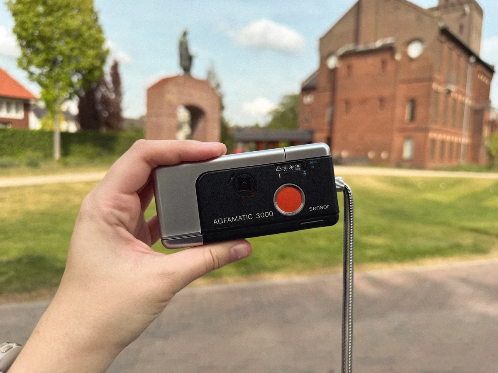
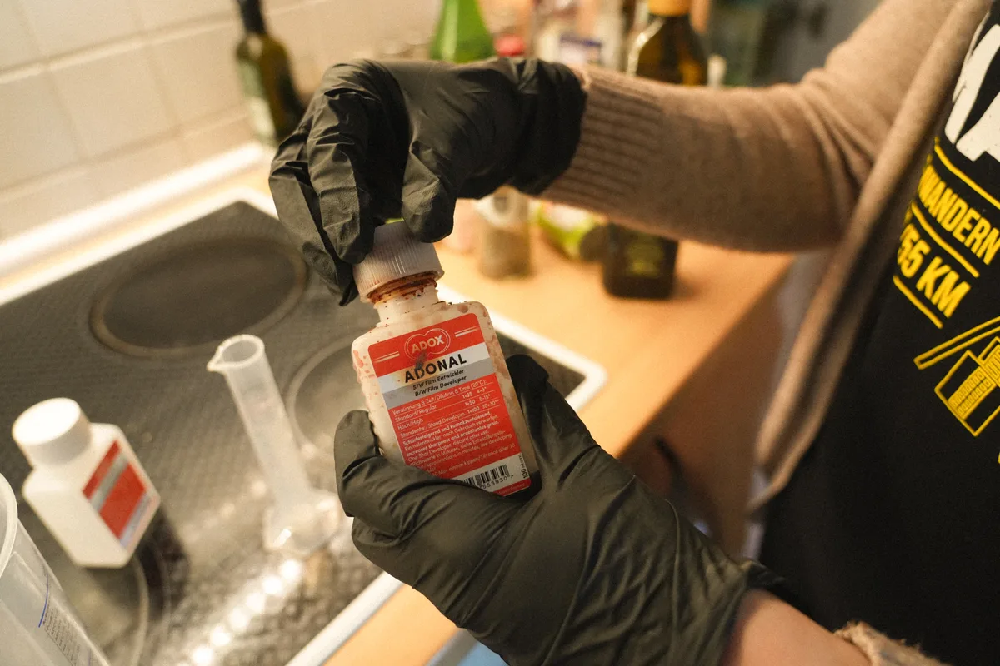
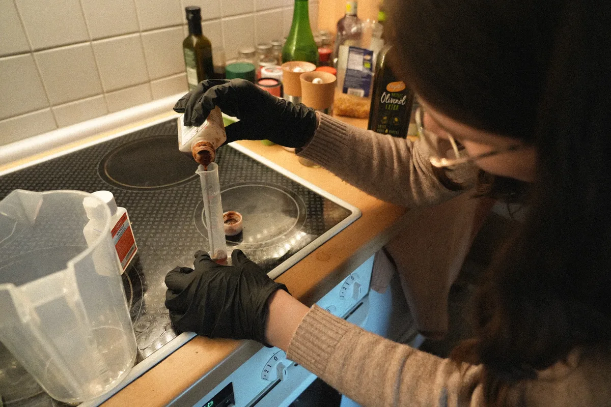
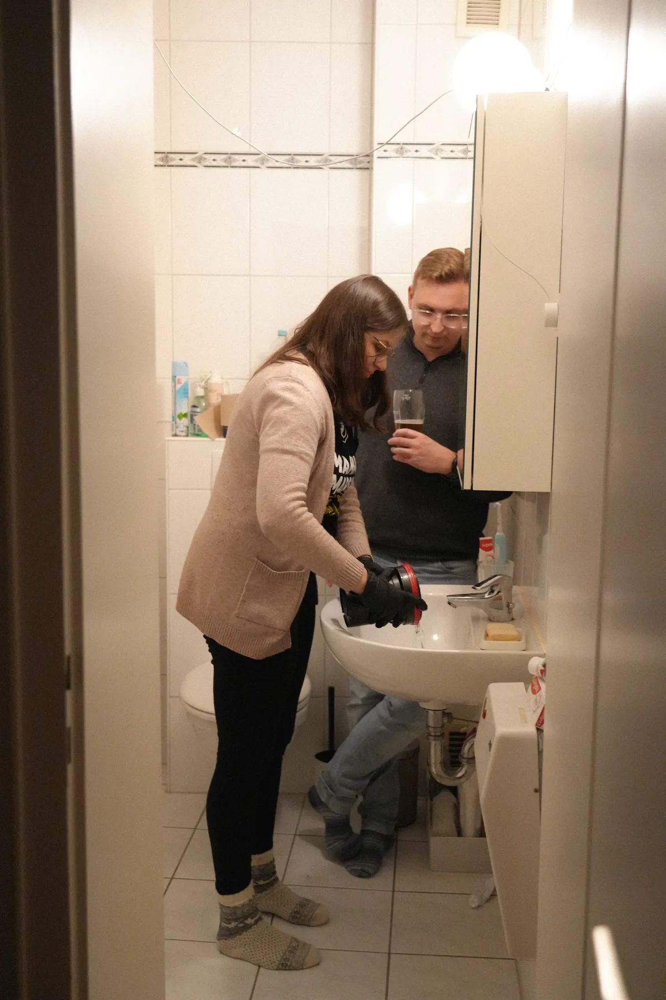
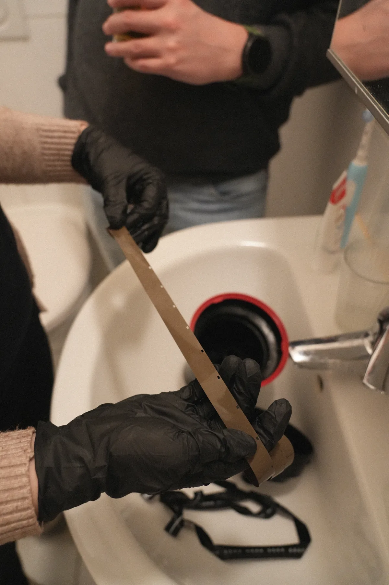

Letzte Woche habe ich eine alte Agfamatic 3000 in einem Second-Hand-Shop in Winterswijk gefunden. Die Ritsch-Ratsch-Kameras waren Mitte der 70er sehr beliebt. Und für 5€ wollte ich sie auf jeden Fall mitnehmen!

Zu meiner Überraschung stellte ich fest, dass noch ein Film eingelegt war. 110 Filme sind heutzutage sehr selten und lassen sich nur noch in speziellen Fotolaboren entwickeln. Deshalb wollte ich es selber versuchen.
Wir haben uns kurzerhand mit Mart getroffen, der in dem Bereich ganz gut ausgestattet ist und er hat mich dann angeleitet. Es war schon aufregend die Chemikalien zusammenzumischen.


Noch aufregender wurde es aber, als ich dann in dem stockdüsteren Badezimmer stand, die Kassette geknackt und den Film herausgezogen habe.

Und dann kam der Moment, in dem ich endlich den Deckel aufschrauben und den Film herausholen konnte!
Naja und da kam leider auch die Enttäuschung. Der Filmstreifen war gleichmäßig braun. Es war nicht einmal ansatzweise etwas von Fotos zu sehen.

Wahrscheinlich war der Film nach all der Zeit einfach schon kaputt. Echt schade, ich hatte mich so darauf gefreut zu sehen, was noch drauf ist!
Trotzdem hat es wirklich Spaß gemacht, den Film zu entwickeln und ich habe schon richtig Lust auf den nächsten Versuch.
Bedankt, Mart!